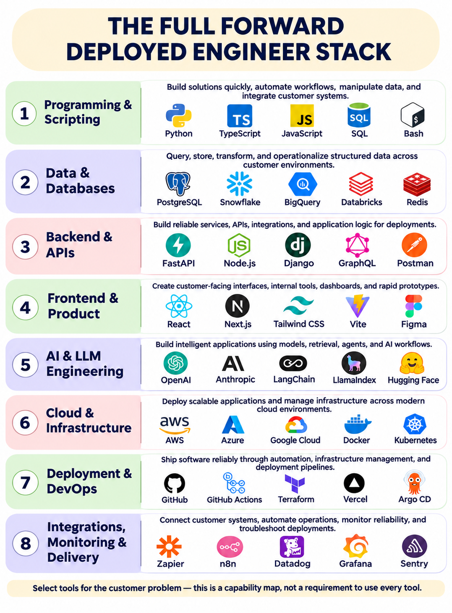

Forward Deployed Engineering
The Global
FDE Factory.
Build deployment-ready talent. Engineer AI solutions. Transform how businesses work.


The business architecture
Six engines. One delivery model.
FormatiQs brings discovery, talent development, engineering and ongoing operations together around measurable business outcomes.
Awareness & market development
Leadership workshops, university engagement and readiness assessments.
Academy, training & certification
Competency pathways, simulations, mentoring and assessment.
Talent sourcing & qualification
Assess and match professionals to global engineering opportunities.
Deployment & engineering services
Embed individual FDEs or multidisciplinary teams around a business outcome.
AI, agentic & product engineering
Design, integrate, test and deploy production AI and software.
Managed services & continuous engineering
Support and improve applications, agents and platforms after launch.
How delivery works
From discovery to managed operations
- Discover
- Architect
- Engineer
- Deploy
- Adopt
- Optimise